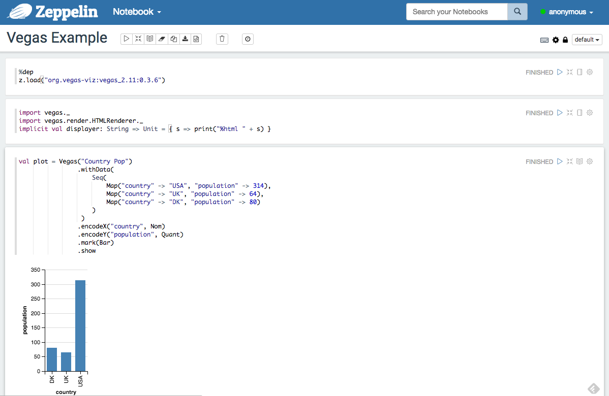

Viz and Math in Apache Zeppelin
For some years, I have been going back an forth between [Spark-Notebook][spark-notebook] and [Apache Zeppelin][zeppelin] for different use-cases. Already 2 years ago, I made a little comparison of the two technologies.
I used Spark-Notebook in order to do develop the code necessary to write the post about model error. It came in handy that Spark-Notebook supports math notation in Markdown out-of-the-box. Zeppelin does not do that.
On the other hand, I have never been fond of the graphics support in Spark-Notebook. Zeppelin has some interesting functionality by default, including the ability to pivot data tables. But it still is too limited for customized charts and visualizations.
Now, luckily, both the visualization aspect and math support can easily be solved.
Math support
Support math notation is as easy as inserting a cell with the following content:
%angular
<script src='https://cdn.mathjax.org/mathjax/latest/MathJax.js?config=TeX-AMS-MML_HTMLorMML'>
</script>A markdown formatted cell looks like this:
# Introduction
I don't want to discuss the biology of a virus or its spreading, even though virus spreading is the topic of the simulation we're about to do. I invite you to look [elsewhere](http://arxiv.org/abs/1411.1472) for that.
We mainly want to get a feel for the main message Taleb's argument in his analysis linked above: The dangers of basing decisions on simple models for the spreading of virusses and the lack discussing the risks involved in analysing these models.
We do this by modelling the spreading of a virus by means of a simple [geometric Brownian motion](https://en.wikipedia.org/wiki/Geometric_Brownian_motion) process. It's the same process that is used in the (in)famous [Black-Scholes model](https://en.wikipedia.org/wiki/Black%E2%80%93Scholes_model).
The differential form of the process is as follows:
$$
d S(t) = S(t) \mu dt + S(t) \sigma d W(t)
$$This is an excerpt from the post on model error. Please note that the $$ symbols are on a line of their own. This is to avoid that Zeppelin renders math in the input field itself.
The following screenshot shows this in action in Zeppelin:

Oh, yes, you might need to refresh the notebook in order for the rendering to take effect.
Vis
Zeppelin has an interesting approach to visualization already. It offers basic types of plots. Unfortunately, these plots are often not sufficient. Especially when one wants to provision dashboards based on notebook content.
Of course, one can use R and Python in Zeppelin, and even interchange data between contexts so that plotting could be done using [ggplot2 or [matplotlib][matplotlib]. But it remains a hassle to use, and not all of these interpreter are always installed in every instance of Zeppelin.
There are a number of Scala plotting libraries, but none that convinced me up till now. Until [Vegas][vegas] came around. It is based on [vega-lite][vega-lite] and offers an API for Scala/Spark. I have done custom visualizations in Zeppelin and Spark-Notebook before, but those involved including additional javascript libraries. Vegas does not require a custom build. It can be used like this:
Fetch the binary package:
%dep
z.load("org.vegas-viz:vegas_2.11:0.3.6")Import the necessary classes:
import vegas._
import vegas.render.HTMLRenderer._
implicit val displayer: String => Unit = { s => print("%html " + s) }And plot the data:
val plot = Vegas("Country Pop")
.withData(
Seq(
Map("country" -> "USA", "population" -> 314),
Map("country" -> "UK", "population" -> 64),
Map("country" -> "DK", "population" -> 80)
)
)
.encodeX("country", Nom)
.encodeY("population", Quant)
.mark(Bar)
.showPlease not that withData takes a Seq of Map, contrary to what is stated on the [github][vegas] page.
The following screenshot shows this running:

Interesting links: